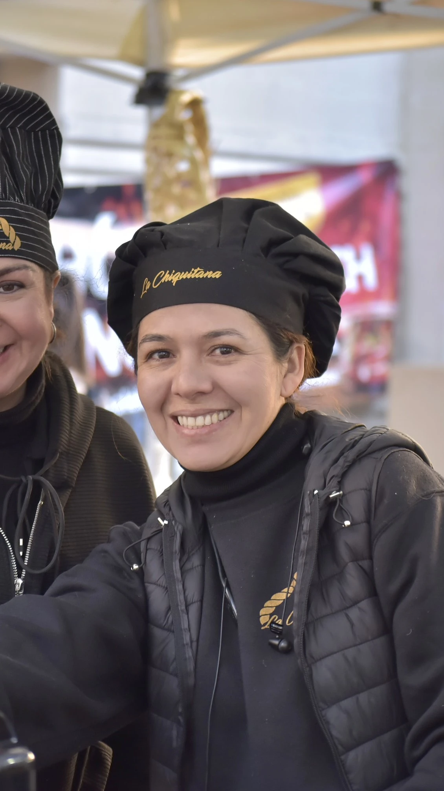
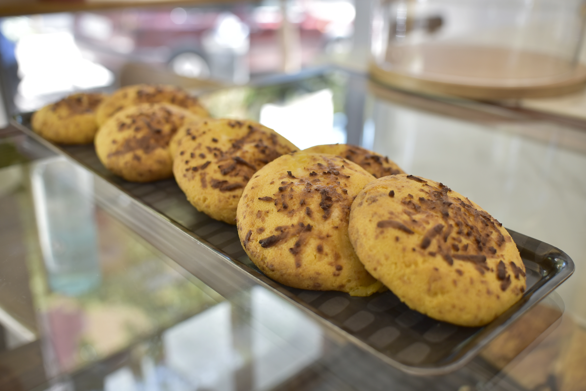
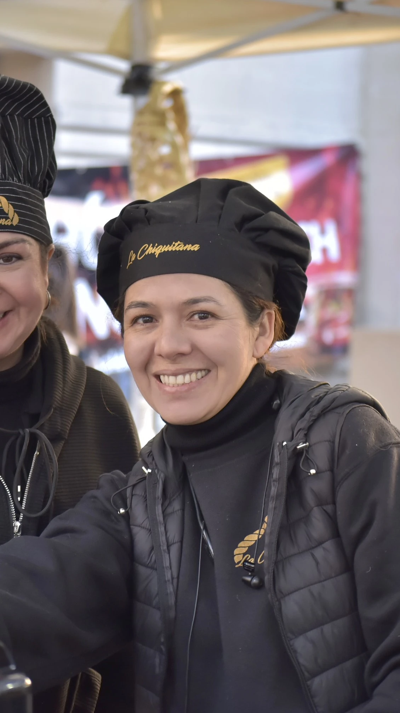
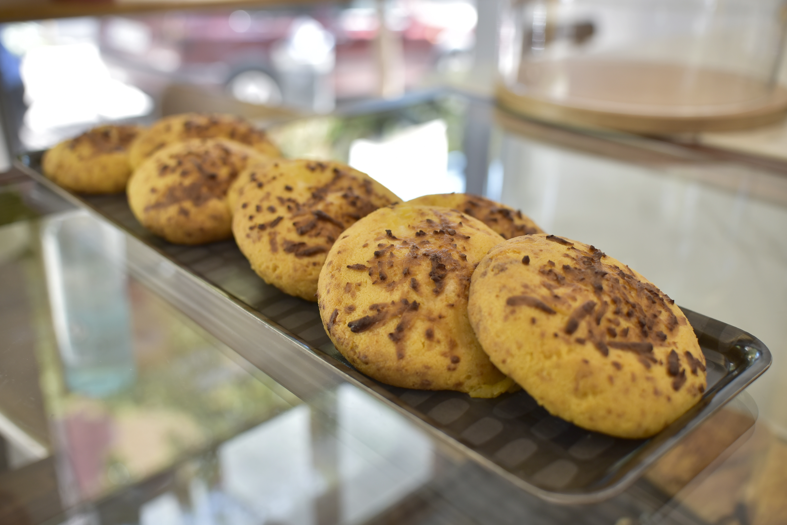
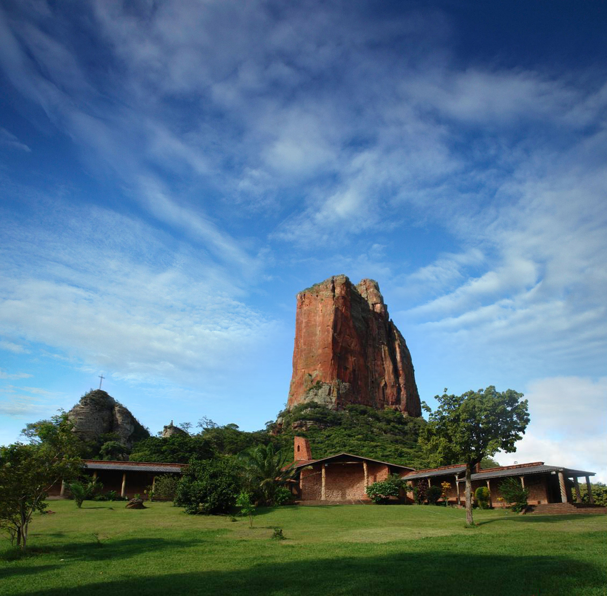
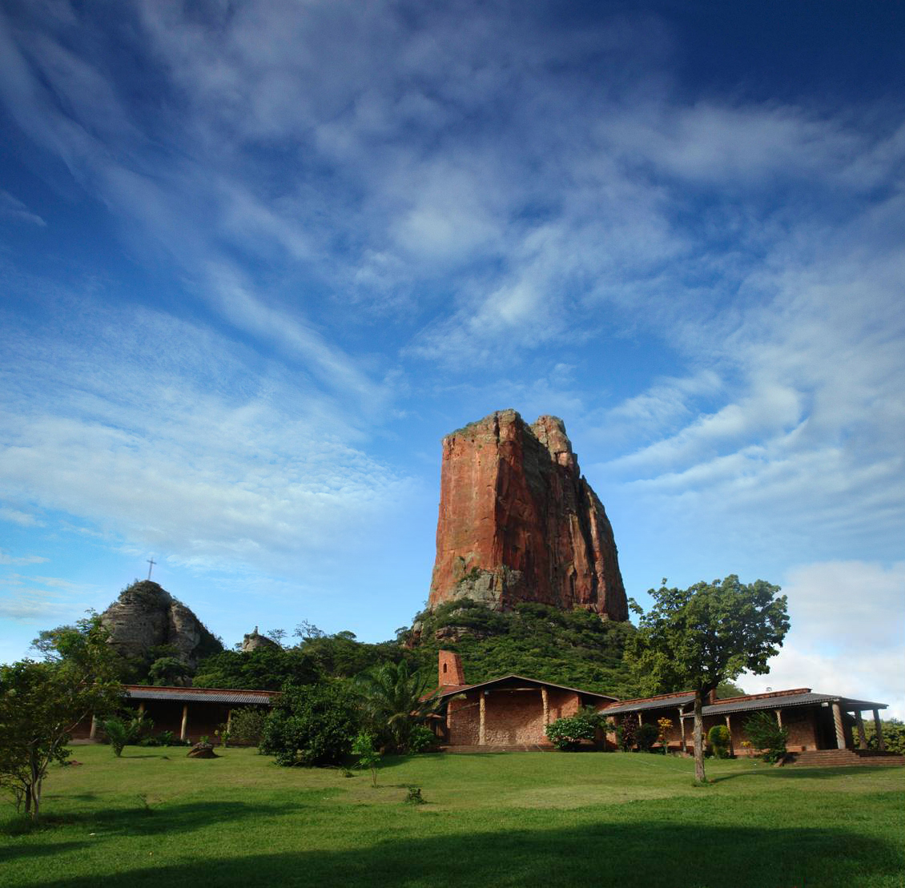

Vive La Chiquitanía
 



¿Qué es la Chiquitania?
La Chiquitania es una región histórica en Santa Cruz, Bolivia, que combina la herencia de las misiones jesuíticas con una biodiversidad extraordinaria.
Nuestra Repostería Tradicional
Cada dulce cuenta una historia, cada receta guarda los secretos de generaciones de maestros reposteros chiquitanos

Salteñas
Pan de queso tradicional, esponjoso y aromático, preparado con queso fresco local y almidón de yuca.
Empanadas de Queso
Masa crujiente rellena de queso fresco derretido, horneadas según la receta ancestral de las misiones.
Rosquitas de Maíz
Deliciosas galletas crujientes hechas con harina de maíz tostado, endulzadas con miel de caña local.
Pan Batido
Pan dulce esponjoso con toques de anís y canela, perfecto para acompañar el mate o café de la tarde.
Tres Generaciones de Sabor
Desde 1952, nuestra familia ha preservado las recetas tradicionales de la Chiquitanía boliviana. Lo que comenzó como un pequeño horno de barro en Santa Cruz, hoy se ha convertido en un puente cultural que lleva los sabores auténticos de Bolivia hasta España.
Los Orígenes
Doña Carmen inicia la tradición familiar en San José de Chiquitos
Segunda Generación
La familia se expande y perfecciona las recetas ancestrales
Llegada a España
Abrimos nuestras puertas para compartir la tradición chiquitana
Descubre la historia completa aquí

 

Nuestro Compromiso Social
Apoyamos a comunidades chiquitanas, promovemos la economía local y colaboramos con proyectos educativos y de sostenibilidad en Bolivia.
Apoyo a Artesanas
Colaboramos con mujeres artesanas de la Chiquitanía para preservar técnicas tradicionales y generar ingresos justos.
Educación y Cultura
Parte de nuestros beneficios se destinan a becas escolares y actividades culturales para niños y jóvenes de la región.
Sostenibilidad
Priorizamos ingredientes locales y envases ecológicos, minimizando nuestro impacto ambiental.
Versos de la Chiquitanía
Un rincón para compartir la sensibilidad y el amor por la tierra chiquitana a través de la poesía de mi padre.
La tierra canta
Bajo el cielo de la Chiquitanía
el viento lleva historias y pan,
la memoria florece en cada día,
y el alma nunca deja de soñar.
Raíces
En la raíz del árbol y del canto
vive el recuerdo de mi hogar,
la esperanza crece en cada manto,
y el amor nunca deja de brotar.
Lo que dicen nuestros clientes
"El cuñapé me transporta directamente a mi infancia en Santa Cruz. Es exactamente como lo hacía mi abuela."
"Nunca había probado repostería boliviana y me enamoré. La calidad y el sabor son incomparables."
"Las empanadas de queso son una experiencia única. Se nota el amor y la tradición en cada bocado."
¿Listo para probar la Chiquitanía?
Realiza tu pedido y te llevamos los sabores auténticos de Bolivia directamente a tu mesa
Ubicación
Barcelona, (Madrid Próximamente)
Servicio a toda España
Teléfono
+34 xxx xxx xxx
pedidos@lachiquitana.es
Horarios
Lun-Sáb: 8:00 - 20:00
Dom: 9:00 - 15:00